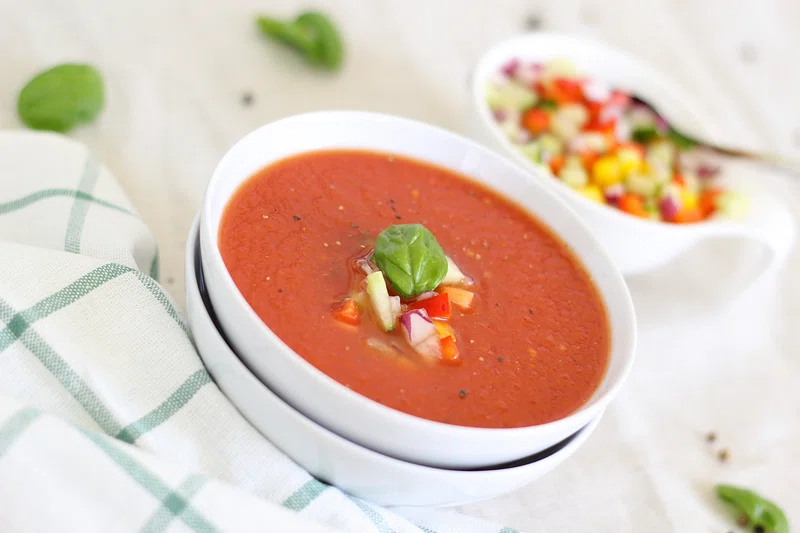

Home
Gazpacho

The epitome of quick and easy food to make. Customiseable, no cooking required, simply add the ingredients to a blender and you're good
to go. Customiseable for any picky eaters, the ingredients listed are simply my go to.
Ingredients
- 6 plum tomatoes
- 4 spring onions
- Half a cucumber
- 1 bell pepper, seeds removed
- Half a cup of water
- 2 tablespoons of vinegar
- 2 tablespoons of olive oil
- Salt, pepper, and some paprika
Directions
- Combine the tomatoes, spring onions, cucumber, pepper and water to a blender, blend until smooth.
- Add some vinegar, blend again.
- Add some salt, pepper, and paprika.
- Serve.